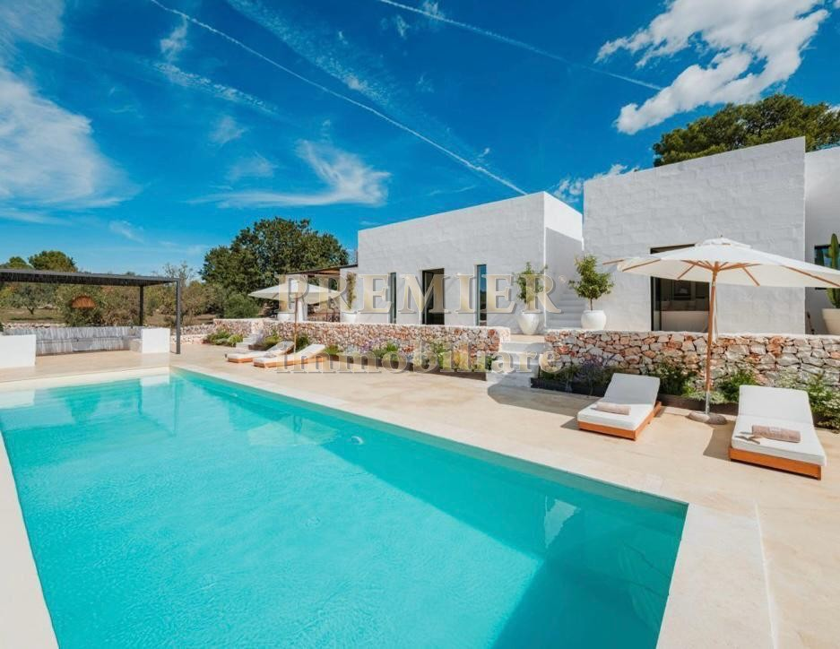
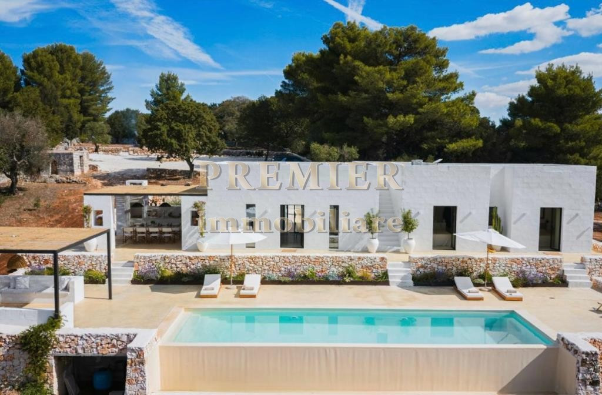
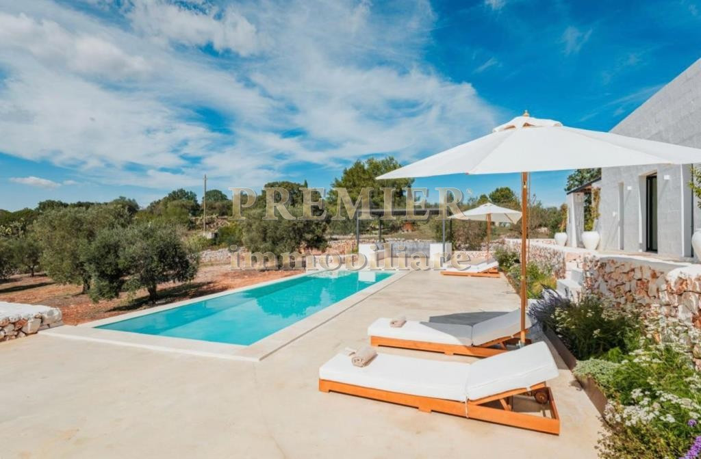
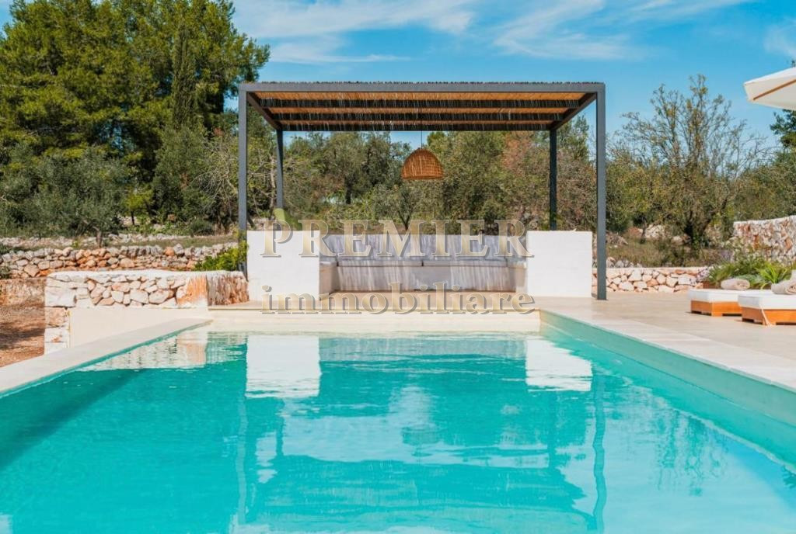
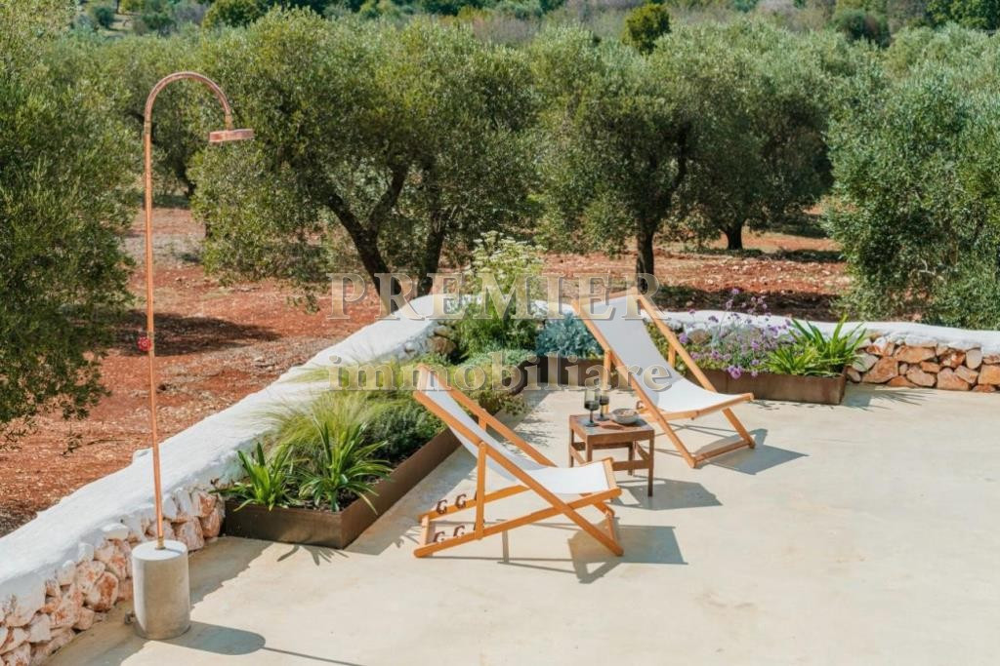
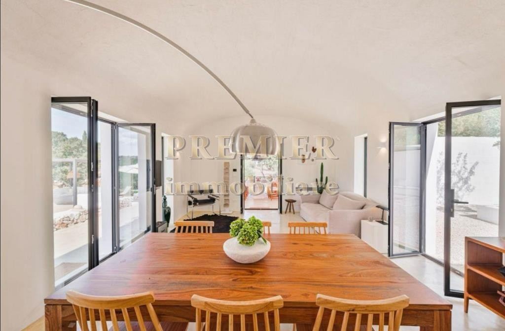
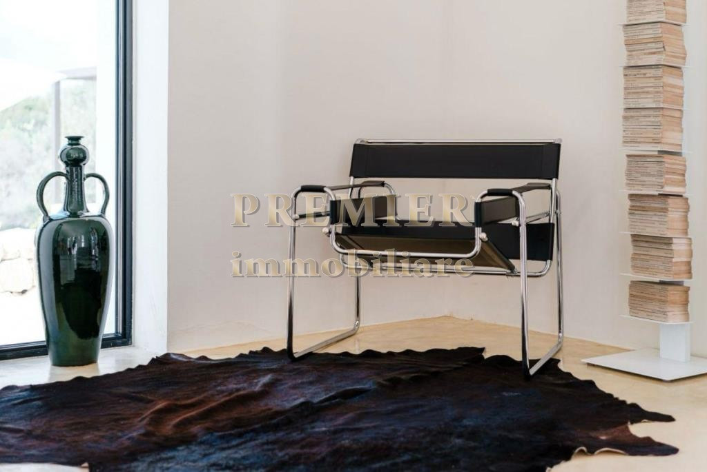

€880.000
Ostuni–Cisternino road · Valle d'Itria, Puglia
Design-forward outdoor life: 40 m² infinity pool aimed at the Itria countryside, three ensuite bedrooms, olives + orange grove. Published July 2026, ottime condizioni — habitable, not a shell.
Opened 28 Aug 2026. Internal rif 25007 / agency 11530. Energy G. Page mentions the possibility of a future dependance — optional; pool and house are built. Interior only ~120 m². No outbound agency button — Instagram blocks those hops.





